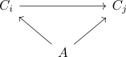
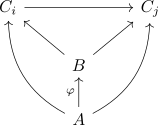

limit as terminal object of a cone category
Proposition
Let $\mathcal{C}$ be a category, $J: \mathcal{J} \rightarrow \mathcal{C}$ a diagram and $\mathrm{Cone}(\mathcal{J})$ the cone category. Then a limit is precisely a terminal object in $\mathrm{Cone}(\mathcal{J})$
Proof
follows from the definitions, as a cone is precisely given by a commutative diagram

where morphisms between cones $A,B$ are given by a single morphism $\varphi: A \rightarrow B$ such that

As $\mathrm{lim}$ is a terminal object, there exists a unique morphism
therefore a limit is a terminal object in $\mathrm{Cone}(\mathcal{J})$
Read backwards for the other way